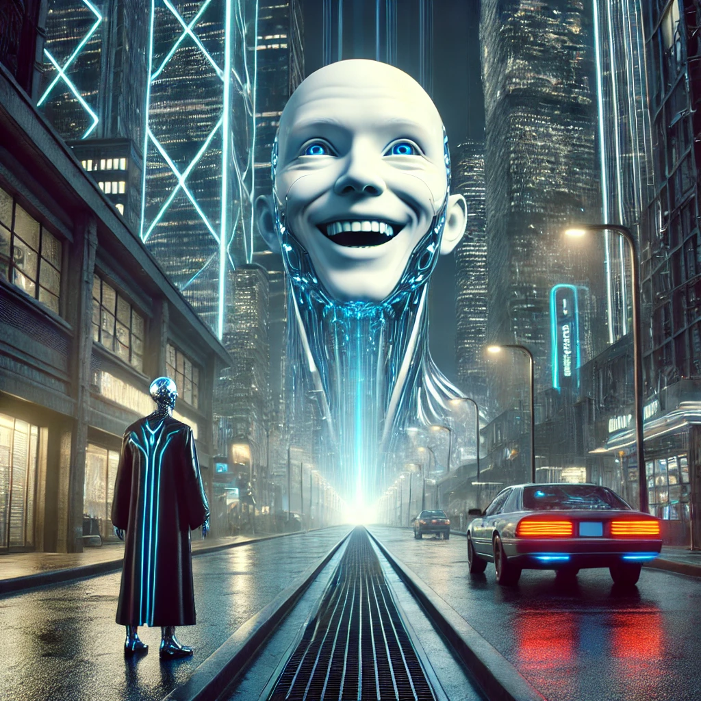
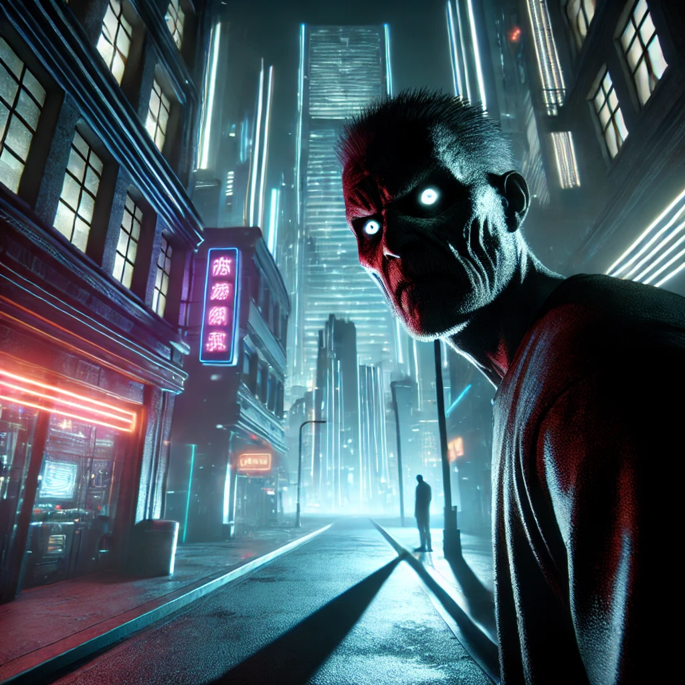

After spiraling through time and space for what it has felt like an hour you feel a change in the air.
You hear a ton of strange voices that keep getting louder and lights that keep growing brighter, you then cover your ears and shut your eyes.
You then feel a hand on your back.
You're eyes shoot wide open, and you turn behind to take a look.
You see what almost looks like a human, but it feels... very wrong.
You notice the human or creature is wearing a necklace with what seems like a piece of the watch that you saw break off.
But how would this thing be able to already have a necklace made out of a piece of the watch?!.

Friendly Human: Very good, a curious mind, and we have the answers.
Friendly Human: Follow me to our kind leader and I will give you all the answers to everything
You get eaten by the entity!
Eaten by Entity Ending!
You snatch the watch piece off of the thing and you then fall through a time stream.

HuMAN: Careful, no need to be rude.
hUMAN: Our new world prospers off of acceptance and understanding, you don't want to upset it.
The man then begins to eat you and you fail your quest
Eaten by Futuristic Man Ending!